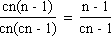
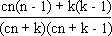

Solution to puzzle 64: Balls in an urn
 An urn contains a number of colored balls, with equal numbers of each color. Adding 20 balls of a new color to the urn would not change the probability of drawing (without replacement) two balls of the same color.
An urn contains a number of colored balls, with equal numbers of each color. Adding 20 balls of a new color to the urn would not change the probability of drawing (without replacement) two balls of the same color.
How many balls are in the urn? (Before the extra balls are added.)
Firstly, we can rule out a trivial case.
Clearly there must initially be more than one ball of each color, for otherwise the probability of drawing two balls of matching color would be zero before adding the new balls, and greater than zero afterwards.
We now calculate the probability of drawing matching colors, before and after adding the extra balls. All drawings are understood to be without replacement.
Before
Let there initially be cn balls; comprised of c colors, with n > 1 balls of each color.
The number of ways of drawing two balls is cn(cn - 1). (There are cn choices for the first ball; cn - 1 choices for the second.)
The number of ways of drawing two balls of a particular color is n(n - 1).
Summing over all colors, the number of ways of drawing matching colors is cn(n - 1).
Hence the probability of drawing matching colors is 
After
Let k balls of a new color be added. (We will set k = 20 at an appropriate point.)
The number of ways of drawing two balls is (cn + k)(cn + k - 1).
The number of ways of drawing matching colors is cn(n - 1) + k(k - 1).
Hence the probability of drawing matching colors is 
Equating Before and After
Equating the above before and after probabilities, we get
(cn - 1)[cn(n - 1) + k(k - 1)] = (n - 1)(cn + k)(cn + k - 1)
Expanding, we have
c2n3 - cn2 - c2n2 + cn + cnk2 - cnk - k2 + k = c2n3 + 2cn2k + nk2 - cn2 - nk - c2n2 - 2cnk - k2 + cn + k
Simplifying, we find that most terms cancel, yielding
cnk2 = 2cn2k + nk2 - nk - cnk
Dividing by nk (which is non-zero), and regrouping
c(k + 1 - 2n) = k - 1
Substituting k = 20, we get c(21 - 2n) = 19.
The only solution with c > 1 is c = 19, n = 10.
Hence there were initially 19 × 10 = 190 balls in the urn.
Source: Original; inspired by Another Bag of Coloured Balls